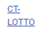

HƯỚNG DẪN SỬ DỤNG PHẦN MỀM E-LEARNING
DÀNH CHO CHUYÊN VIÊN KINH DOANH
MỤC LỤC
GIỚI THIỆU QUY TRÌNH
Chuyên viên kinh doanh khi đăng nhập hệ thống sẽ thực hiện các chức năng như sau:
1. Đăng nhập hệ thống đào tạo trực tuyến
Học viên truy cập theo đường link
Học viên thực hiện theo 3 bước để đăng nhập vào ứng dụng:
- Bước 1: Nhập thông tin tài khoản
- Bước 2: Nhập thông tin mật khẩu, người dùng có thể ghi nhớ đăng nhập để thuận tiện cho lần đăng nhập sau bằng cách tích chọn “Ghi nhớ đăng nhập”
- Bước 3: Chọn “Đăng nhập” để thực hiện đăng nhập
Sau khi đăng nhập hệ thống thành công, giao diện hiển thị màn hình thống kê nhanh các thông số CVKQ quản lý
Vùng 1: thanh menu trái gồm các chức năng dành cho CVKD
Vùng 2: Hiển thị thông tin theo các chức năng tương ứng:
- Theo dõi số nhân viên bán hàng được đào tạo theo tháng
- Thống kê khóa học online, offline
- Theo dõi danh sách nhân viên bán hàng mới và nhân viên bán hàng cũ

2. Học trực tuyến
- Trên thanh menu trái, chọn chức năng “Hệ thống học trực tuyến”, hệ thống sẽ hiển thị giao diện với danh sách các khóa học như hình bên
- CVKD chọn khóa học để xem chi tiết, đăng ký và học trực tuyến

3. Thêm, sửa, xóa Đại lý do CVKD phụ trách
Trên thanh menu trái, chọn chức năng Quản lý đại lý,
3.1 Thêm mới đại lý
3.2 Sửa đại lý
3.3 Xóa đại lý
- Gõ nội dung vào ô tìm kiếm -> chọn để tìm kiếm đại lý cần cập nhật
- Tại đây CVKD có thể xem thông tin chi tiết của Quản lý Đại lý bằng cách click vào đường link xanh
hoặc xem chi tiết điểm bán click
 thuộc đại lý hoặc xem chi tiết nhân viên click
thuộc đại lý hoặc xem chi tiết nhân viên click 
3.1 Thêm mới đại lý:
- Bước 1: chọn mũi tên xuống để mở rộng phần thêm mới, chọn
 để thu gọn
để thu gọn - Bước 2: nhập các thông tin vào các ô (có dấu * là bắt buộc phải nhập)
- Bước 3: chọn
 để thêm mới đại lý
để thêm mới đại lý
3.2 Sửa đại lý:
- Bước 1: chọn đại lý cần sửa ->

- Bước 2: nhập các thông tin vào các ô cần sửa (có dấu * là bắt buộc phải nhập)
- Bước 3: chọn
 để sửa, chọn
để sửa, chọn  để hủy sửa và quay lại màn hình trước
để hủy sửa và quay lại màn hình trước

3.3 Xóa đại lý:
- Bước 1: chọn đại lý cần xóa ->

- Bước 2: chọn
 để xóa, chọn
để xóa, chọn  để hủy
để hủy

4. Thêm, sửa, xóa Điểm bán
Trên thanh menu trái, chọn chức năng Quản lý điểm bán
4.1 Thêm mới điểm bán
4.2 Sửa điểm bán
4.3 Xóa điểm bán
- Gõ nội dung vào ô tìm kiếm -> chọn
 để tìm kiếm điểm bán cần cập nhật
để tìm kiếm điểm bán cần cập nhật - Tại đây CVKD có thể xem thông tin chi tiết Đại lý mà điểm bán trực thuộc bằng
cách click vào đường link xanh  hoặc xem chi tiết nhân viên click

4.1 Thêm mới Điểm bán:
- Bước 1: chọn mũi tên xuống
 để mở rộng phần thêm mới điểm bán, chọn
để mở rộng phần thêm mới điểm bán, chọn  để thu gọn
để thu gọn - Bước 2: nhập các thông tin vào các ô (có dấu * là bắt buộc phải nhập)
- Bước 3: chọn để thêm mới điểm bán

4.2 Sửa Điểm bán:
- Bước 1: chọn điểm bán cần sửa ->

- Bước 2: nhập các thông tin vào các ô cần sửa (có dấu * là bắt buộc nhập)
- Bước 3: chọn
 để sửa, chọn
để sửa, chọn  để hủy sửa và quay lại màn hình trước
để hủy sửa và quay lại màn hình trước

4.3 Xóa Điểm bán:
- Bước 1: chọn điểm bán cần xóa ->

- Bước 2: chọn
 để xóa, chọn
để xóa, chọn  để hủy
để hủy

5. Thêm, sửa, gỡ Nhân viên bán hàng
Trên thanh menu trái, chọn chức năng Quản lý nhân viên
- 5.1 Thêm mới nhân viên thủ công
- 5.2 Xem thông tin nhân viên
- 5.3 Sửa nhân viên
- 5.4 Gỡ nhân viên
Gõ nội dung vào ô tìm kiếm -> chọn  để tìm kiếm nhân viên cần cập nhật
để tìm kiếm nhân viên cần cập nhật

Trên thanh menu trái, chọn chức năng Quản lý nhân viên
- 5.1 Thêm mới nhân viên thủ công
- 5.2 Xem thông tin nhân viên
- 5.3 Sửa nhân viên
- 5.4 Gỡ nhân viên
Gõ nội dung vào ô tìm kiếm -> chọn để tìm kiếm nhân viên cần cập nhật
5.1 Thêm mới Nhân viên:
- Bước 1: chọn mũi tên xuống
 để mở rộng phần thêm mới nhân viên, chọn
để mở rộng phần thêm mới nhân viên, chọn  để thu gọn
để thu gọn - Bước 2: nhập các thông tin vào các ô (có dấu * là bắt buộc phải nhập)
- Bước 3: chọn
 để thêm mới nhân viên, chọn để hủy thêm mới
để thêm mới nhân viên, chọn để hủy thêm mới
5.2 Xem thông tin Nhân viên:
Chọn nhân viên cần xem -> 
CVKD có thể xem thông tin chi tiết nhân viên, thời khóa biểu các khóa học nhân viên phải tham gia và khung năng lực nhân viên đang tham gia

5.3 Sửa Nhân viên:
- Bước 1: chọn nhân viên cần sửa ->

- Bước 2: nhập các thông tin vào các ô cần sửa (có dấu * là bắt buộc nhập)
- Bước 3: chọn để sửa, chọn
 để hủy sửa và quay lại màn hình trước,
chọn để gỡ nhân viên khỏi Điểm bán
để hủy sửa và quay lại màn hình trước,
chọn để gỡ nhân viên khỏi Điểm bán
5.4 Gỡ Nhân viên:
- Bước 1: chọn nhân viên cần gỡ ->

- Bước 2: chọn
 để gỡ nhân viên khỏi điểm bán, chọn
để gỡ nhân viên khỏi điểm bán, chọn  để hủy
để hủy

5.5 Thêm dữ liệu bằng Excel:
Chức năng này cho phép CVKD thêm mới nhiều người dùng bằng cách khai báo theo mẫu được tạo sẵn trên Excel.
Sau khi khai báo đầy đủ các trường thông tin theo quy định trong biểu mẫu tải về, CVKD tải trực tiếp lên hệ thống & qua chức năng Import Người dùng để gán hàng loạt người dùng vào hệ thống.